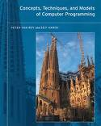
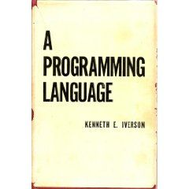

2011.08.14
this is another entry in a series on programmer enrichment
A language that doesn’t affect the way you think about programming is not worth knowing. – Alan Perlis
inspired by a LtU thread and the great post Programming Achievements: How to Level Up as a Developer by Jason Rudolph1. most code samples from Rosetta Code.
The philosopher Friedrich Nietzsche believed that all interactions and interpretations of the external world occurred through the lens of individual perspective. Therefore, truth to Nietzsche was subject to interpretation. Programmers are especially prone to subjective views on their industry best-practices and valuations, often colored by their chosen2 programming languages.3 However, Nietzsche believed that in order to achieve a high-level of thinking, one should grant all perspectives equal opportunity and let them stand, or fall, on their own merits. You’ve probably experienced this approach yourself in college if a professor demanded the classic assignment whereby students write an essay taking the side of an argument that they themselves denounce. This type of exercise is potentially very powerful in that it often works to crystalize one’s own beliefs and occasionally helps to shake those beliefs to the core.
A Perlis Language is a programming language that I believe will shake one’s views on software development to the core.
Below I will enumerate4 some of my Perlis Languages and give an all-too-brief overview and just a sip of code for each.
Joy is an example of a concatenative programming language or more simply put, a stack-based language. That is, functions are never explicitly passed arguments, but instead take an implicit stack that is maintained by the programmer. This may seem totally insane, a sentiment not wholly inaccurate, but the levels of succinctness and elegance achieved via this model is stunning. The complexity in maintaining a stack is typically handled by concatenative programmers through the process of vigorous factoring of words (think functions) into smaller words. There is a whole class of purely stack-manipulation primitives that signal the need for factoring when their use becomes too pervasive. The goal is to constantly drive the code toward an expression of the domain rather than an expression of the programming language-specific expression of the domain. There are certainly better and more historically significant concatenative languages, but Joy strikes a nice chord with me – your mileage may vary.
(* Quicksort in Joy *)
DEFINE qsort ==
[small]
[]
[uncons [>] split]
[swapd cons concat]
binrec .Daniel Spiewak wrote a great trilogy about concatenative languages; his treatment is far better than I could ever produce.
possible substitutes: Factor, Forth, Cat, PostScript
Eiffel is an extremely opinionated object-oriented programming language. Like myself, many programmers today have a majority-share of “real-world” experience in one OO language or another. However, you haven’t used anything like Eiffel. That is, the bulk of Eiffel will be recognizable to most programmers, but the enlightening feature for most is the first-class support for Design by Contract. In a nutshell, DbC (or contracts programming) is an approach that allows one to specify the expectations on method results based on their required input parameters and also to define class-level invariants.5 This may seem fairly simplistic, but it’s in this simplicity that forms the basis for an extremely powerful design paradigm. In fact, contract support libraries and extensions have been created for other languages: Ruby, Clojure, C++, Java, and Groovy to name only a few.
-- Dictionary class fragment
class DICTIONARY [ELEMENT]
feature
put (x: ELEMENT; key: STRING) is
-- Insert x so that it will be retrievable
-- through key.
require
count <= capacity
not key.empty
ensure
has (x)
item (key) = x
count = old count + 1
end
invariant
0 <= count
count <= capacity
endpossible substitutes: D, Cobra
Qi is a Lisp – big deal right? Wrong. Qi is a Lisp with skinnable types, a built-in logic engine, rewrite rules, back-tracking dispatch, built-in lexer and parser generators, and pattern matching that compiles down to highly-performant Common Lisp. The author Dr. Mark Tarver has strong opinions on the state of the software development in general and Lisp in particular (you may already have read The Bipolar Lisp Programmer) and these opinions shine in the implementation of Qi. The successor to Qi, Shen, is in active development with a release scheduled some time this summer.
\ A simple expression calculator \
(datatype arith-expr
X : number;
====================
[num X] : arith-expr;
if (element? Op [+ - * /])
X : arith-expr; Y : arith-expr;
===============================
[X Op Y] : arith-expr;)
(define do-calculation
{arith-expr --> number}
[X + Y] -> (+ (do-calculation X) (do-calculation Y))
[X - Y] -> (- (do-calculation X) (do-calculation Y))
[X * Y] -> (* (do-calculation X) (do-calculation Y))
[X / Y] -> (/ (do-calculation X) (do-calculation Y))
[num X] -> X)possible substitutes: Pure
Clojure is a fantastic language, but let’s just say that I have some skin in this game. Take this entry with a grain of salt. So instead…
Kernel is also a Lisp, but it differs in that it completely eliminates the line separating compile-time and runtime via fexprs. In short, fexprs are functions that do not evaluate their arguments until explicitly called on to do so. Kernel achieves this seemingly impossible behavior by treating environments as first class objects that serve as the evaluation context. This handling of environments also helps to make Kernel evaluation hygienic since the evaluation context of any symbol or combination is fully controlled. Needless to say this is voodoo of the highest order, but the rules of the language are simple and consistent and it’ll blow your mind to see how its underpinnings start at a deeper and more abstract position than even McCarthy’s original.
;; The implementation of apply in Kernel
;; This is typically a Lisp primitive
($define! apply
($lambda (appv args)
(eval (cons (unwrap appv) args)
(make-environment))))via Manuel Simoni and Patrick Logan
possible substitutes: newLISP
Oz is truly a “my language has more paradigms than yours” kind of language.6 Oz (like many hyper-multi-paradigm languages) is unfortunately

relegated to the “educational language” category, but regardless its influence pervades a lot of the thinking in distributed and dataflow computation (Akka for instance is deeply influenced by Oz). As an added bonus, the canonical book on Oz, Concepts, Techniques, and Models of Computer Programming is in my top ten must read list for developers. It’s apt that a mind-bending language should couple with a likewise mind-bending book.%% Towers of Hanoi in Oz
declare
proc {TowersOfHanoi N From To Via}
if N > 0 then
{TowersOfHanoi N-1 From Via To}
{System.showInfo "Move from "#From#" to "#To}
{TowersOfHanoi N-1 Via To From}
end
end
in
{TowersOfHanoi 4 left middle right}possible substitutes: Erlang, Prolog, Mercury, Alice
RCA’s 8-bit Cosmac processor was
shot into space as a main component7 of the Galileo
spacecraft, but it’s novelty lies in its bizarro architecture. For
example, while the processor did not support a CALL
instruction, it did support subroutines through the fact that any of its
16 16-bit registers could serve as the program-counter. Likewise the
1802 did not have a stack, but clever register usage was often the cure
for this “deficiency”. In addition it had a very simple I/O port that
hackers used to maximum effect. While not the fastest CPU ever made (nor
even in its time), the stark simplicity of the processor and its
assembly code will make for a mind-bending experience. Coupled with a
visual emulator (see link below), it’s fun to see the consequences of
each instruction.
... stack push
GHI R3
STXD
GLO R3
STXD
... stack pop
IRX
LDXA
PLO R3
LDX
PHI R3possible substitutes: MIX, The Art of Assembly Language Programming
Frink is a programming language that is generally known for its ability to handle and convert between a bevy of units of measure consistently throughout calculations. For anyone who has created a complex system (or even a simple one for that matter) that needed to juggle varying units of measure, the complexity of the problem that Frink handles seamlessly is staggering.
// Levenshtein distance is a built-in
println[editDistance["kitten","sitting"]]
// Convert feet to meters
38 feet -> meterspossible substitutions: none
I will be honest. I have never used APL and as a result find it impenetrable. However, my inclusion in this list is entirely predicated on the strength of the amazing book A Programming Language by Kenneth Iverson.

That is, the best programming language books infuse a strong sense of design8 into the narrative. The strength of this approach is that not only are you learning a programming language, but you’re also learning how to think in that language, and the very why of the language itself. Iverson’s book elucidates the motivating forces behind the design of APL (the need for a universal notation for computation to name a primary) and systematically builds the rationale for APL and the realizing language incrementally. This book is not for the squeamish, and you will likely not fully understand APL by simply reading it (although I may be projecting here), but it’s worth the effort.⍝ John Conway's "Game of Life" in APL
life←{
↑1 ⍵∨.^3 4=+/,¯1 0 1∘.⊖¯1 0 1∘.⌽⊂⍵
}Haskell is my mind-bending language of choice at the moment, but if you’re not prepared to be humbled you may not find it as agreeable. That is, before learning Haskell you will think that you know a lot about:
But Haskell will laugh at your knowledge and show you otherwise. It’s that simple – and to learn more about these topics when you think you’ve learned all there is to know is a slap in the face – but the good kind – the kind that wakes you from your dogmatic slumber.
-- Sierpinski triangle in Haskell
sierpinski 0 = ["*"]
sierpinski n = map ((space ++) . (++ space)) down ++
map (unwords . replicate 2) down
where down = sierpinski (n - 1)
space = replicate (2 ^ (n - 1)) ' '
main = mapM_ putStrLn $ sierpinski 4possible substitutions: ML, OCaml, Agda, Scala
I hope that this list9 will motivate you to explore one or more (or all) of the languages herein. I think you’ll find the effort worthwhile should you approach the task with an open mind.
What are your Perlis Languages?
:F
My modifications to Jason’s original list can be viewed at https://gist.github.com/1138647.↩︎
Or those that chose them in most cases.↩︎
Programming language favoritism is just one of many prejudices that infect programmer thinking, but I choose to focus on it for the puposes of this post.↩︎
In no particular order.↩︎
I realize there is more to DbC than that, but this post is already overlong.↩︎
I sometimes poke good-natured fun at Scala about this, but sheesh they don’t even have a builtin logic engine. ;-)↩︎
Although it seems to have been chosen by default since there were very few (if any) radiation-resistant microprocessors at the time.↩︎
I have a draft of a post about books of this type… one day I’ll complete it.↩︎
There are others that I could have (should have?) mentioned. Others like: Squeak, Scheme, Common Lisp, Prolog, and even more still… but I felt that others might like to talk about these and any others I’ve missed instead.↩︎